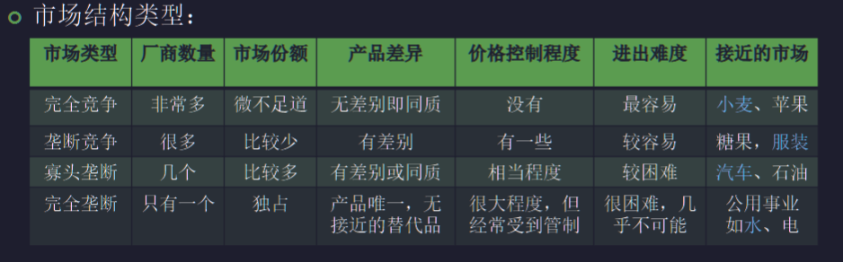
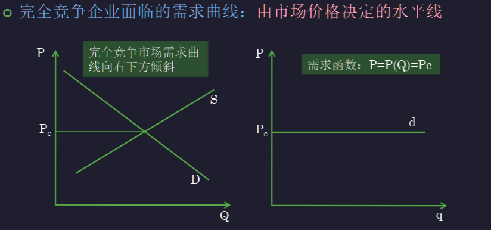
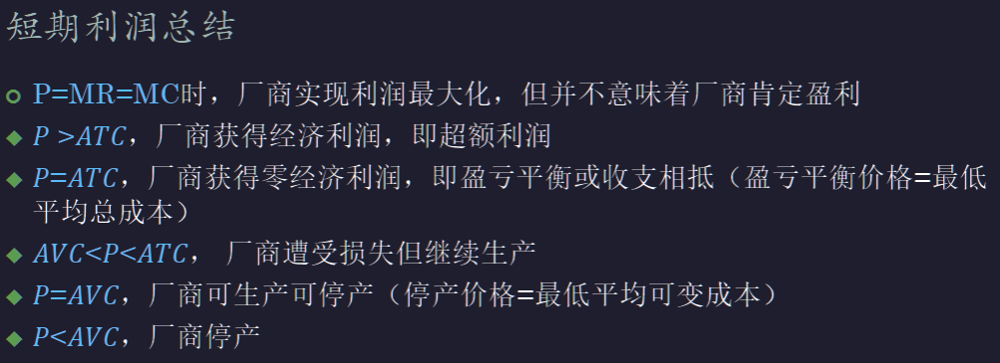
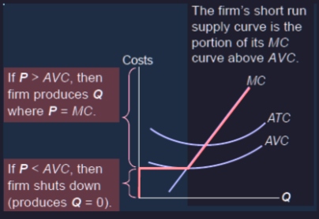
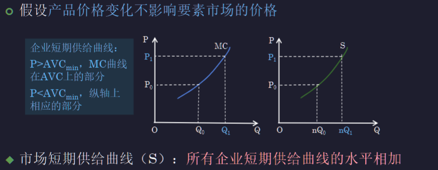
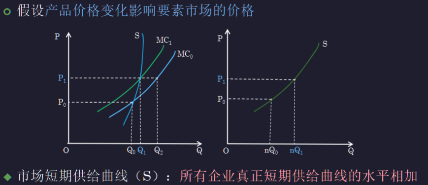
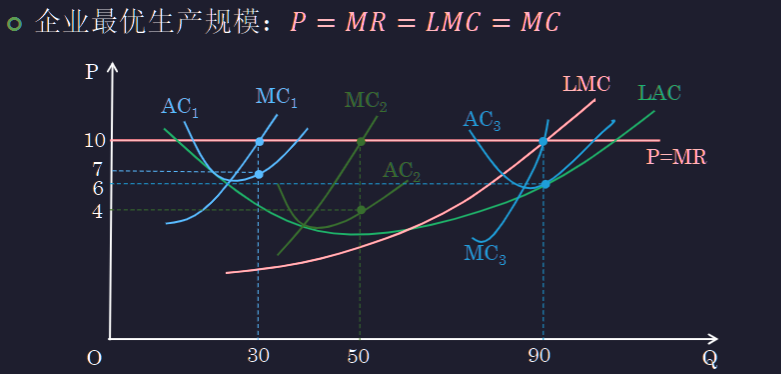

Chap.04 完全竞争产品市场
约 571 个字 • 预计阅读时间 1 分钟
企业收益与市场结构¶
需求类型¶
- 市场需求：对某个市场上全部产品，所有企业的同种产品的需求
- 厂商需求（企业面临的需求）：对市场上某个企业产品的需求
企业收益与市场结构¶
- 市场需求取决于消费者的行为（个人需求）
- 企业面临的需求取决于消费者行为，以及同一市场中其他企业的行为（比亚迪与特斯拉）
- 厂商需求函数 \(P(Q)\) 依赖于市场结构或市场竞争程度
- 企业的收益 \(R(Q)=P(Q)Q\) 与企业所处的市场结构密切相关
市场结构划分依据与类型¶
- 依据：厂商数量、产品差异、市场份额、价格控制程度、进出难度
- 类型

- 完全竞争：企业不能决定或影响价格 (price taker, price taking)
- 不完全竞争：企业有定价权 (price maker, price searching)
完全竞争市场¶
- 非常多的买者和卖者
- 产品同质
- 自由进出市场
- 完全信息
- 单个厂商是市场价格的接受者
完全竞争企业面临的需求曲线和收益曲线¶

- 市场需求曲线向右下方倾斜，因为市场需求是消费者行为决定的
- 单个厂商的份额很小，所以需求函数是水平的，相对于市场来说无论多少都能卖出去
- 收益函数
- \(R=PQ=P_0Q\)
- \(AR=P_0\)
- \(MR=\frac{dR}{dQ}=P_0\)
- 只有 R 是斜直线，其他都是水平直线
完全竞争企业的短期均衡¶
- 短期，边际收益=边际成本
- 完全竞争利润最大：\(MR=P=MC\)
短期利润最大化和盈亏¶
- \(P>ATC\) 盈利，获得超额利润
- \(P<ATC\) 亏损，经济利润为负
- \(P=ATC\) 不亏不盈，经济利润为 0
- 企业利润最大化时，三种结果都有可能
短期亏损的决策¶
- 损失分析
- 停产损失：全部不变成本 \(FC\)
- 继续生产：\(TR-VC-FC\,\,(TR, VC > 0)\)
- 企业决策
- \(AVC < P = MC < ACT\) 继续生产
- 价格高于平均可变成本，则继续生产
- \(AVC=P=MC<ATC\) 企业停止营业点
- 可以继续生产，也可以停产
- AVC 的最低点，就是停业点
- \(P=MC<AVC<AC\) 停产
- \(AVC < P = MC < ACT\) 继续生产

完全竞争企业的短期供给曲线¶

- \(P>AVC_{min}\) 时，与 MC 曲线重合
- \(P<AVC_{min}\) 时，停产，产量到 0
市场的短期供给曲线¶
- 市场价格发生变化时，市场中所有的完全竞争企业都会根据价格变化来调整自己的利润最大化产量，从而改变对要素的需求
- ==要素市场==变化的两种情况
- 如果所有这些企业对要素的需求在整个要素市场上微不足道，改变要素需求的行为不影响要素市场的价格（口罩与无纺布，口罩生产只是无纺布用途的很小一部分，不会导致无纺布价格上升）
- 如果在要素市场上构成一个举足轻重的部分，那么会改变要素价格，从而导致每个企业的边际成本和平均成本曲线波动（口罩与熔喷布）


- 如果价格变化影响要素市场价格，那么价格的变化会产生新的 \(MC\) 边际成本线，取到一个新的点
- 所有点的连线才是所有企业真正短期供给曲线，也是一种扩展线
完全竞争企业的长期均衡¶
- 短期企业规模固定
- 利润最大化产量 \(P=SMC\)
- 不同规模的经济利润不同
- 长期企业规模可变（所有要素都可以调整）
- 利润最大化产量 \(P=LMC\) （长期边际收益=长期边际成本）
- 最优规模：在所有短期均衡中选择一个最优的短期均衡
企业的规模调整¶

- 找到 \(LMC=P=MR\) 对应的产量
行业规模调整¶
- 企业进出的平衡点 \(\pi=0, TR=TC\,(P=ATC)\)
- \(\pi>0,P>ATC\) 盈利，进入市场
- \(\pi<0,P>ATC\) 亏损，退出市场
- \(\pi=0,P=ATC\) 没有进入和退出
- 长期退出 vs. 短期停产
- 短期停止营业点：\(TR=VC\,(P=AVC)\)
- 行业的规模：企业进出调整行业的规模，当该行业中所有完全竞争企业都达到零经济利润（不是会计利润）时，达到均衡 \(P=LMC=LAC\)
长期均衡¶
- 企业长期利润最大化 \(P=AR=MR=LMC=LAC\)
- 完全竞争条件下：\(P=AR=MR\)¶